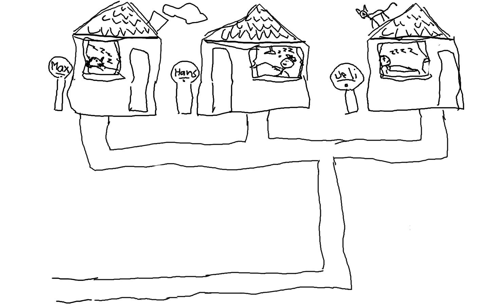
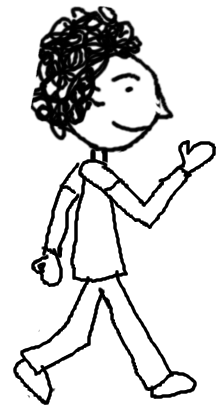

 
Start
Dein Browser untersützt das audio-Tag nicht. Du kannst diese Station aber auch ohne Musik spielen. Oder möchtest du eine aktuellere Browser-Version installieren?
Dein Browser untersützt das audio-Tag nicht. Du kannst diese Station aber auch ohne Musik spielen. Oder möchtest du eine aktuellere Browser-Version installieren?